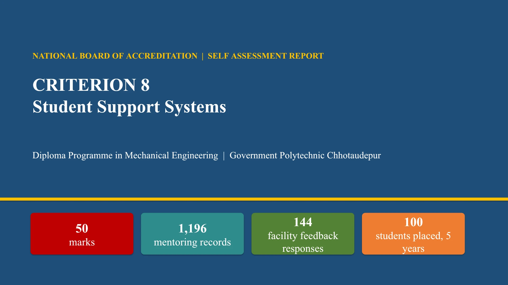

Facility feedback
15 statements and 144 responses, with an overall mean of 3.58 out of 5 for terms 241 and 242, as reported in the presentation.
Guidance throughout the diploma
Class mentors, monthly meetings, academic guidance and feedback help students plan their progress through the programme.
The presentation reports that 34% of the weak student–subject entries passed GTU in the same term. This is a student–subject measure, rather than a percentage of unique students.
The first two percentages concern separate SPI groups. Of 509 students, 343 were weak at first mentoring; 110 of those 343 reached the final semester (32%, rounded). These observations do not by themselves establish that mentoring caused the improvements.
The feedback process uses a five-point Google Form, workbook analysis, identification of weaker-rated items, an action-taken report and follow-up for the next programme.
15 statements and 144 responses, with an overall mean of 3.58 out of 5 for terms 241 and 242, as reported in the presentation.
Wi-Fi, toilets, drinking water, sports, placement notices, greenery and cleanliness.
The Idea2Impact session recorded a mean rating of 3.81 out of 5; 65.3% of answers were rated 4 or 5.
Values reproduced from the supplied student-support presentation.
Entry-cohort averages · SPI scale 0–10.
A comparison of recorded cohort averages does not establish that mentoring caused the change.
Mean scores on a five-point scale.
Forms cover different programmes and response counts; these scores describe the recorded feedback, not a single combined survey.
Department presentation
Mentoring, feedback, career guidance, placement and entrepreneurship.

NATIONAL BOARD OF ACCREDITATION | SELF ASSESSMENT REPORT CRITERION 8 Student Support Systems Diploma Programme in Mechanical Engineering | Government Polytechnic Chhotaudepur 50 marks 1,196 mentoring records 144 facility feedback responses 100 students placed, 5 years
Criterion at a glance 50 marks GP Chhotaudepur | Mechanical Engineering | NBA Criterion 8 (SAR) 8.1 Mentoring system 10 8.2 Feedback analysis, action 10 8.3 Feedback on facilities 5 8.4 Career guidance, placement 20 8.5 Entrepreneurship 5
8.1 Mentoring system 10 marks GP Chhotaudepur | Mechanical Engineering | NBA Criterion 8 (SAR) 1 Class coordinator (mentor) for each class 2 Mentoring sheet per class, every term 3 Monthly meeting with students 4 Mid-semester weak muster, below 50% 5 GTU result of weak students recorded 509 students mentored 27 class sheets, 10 terms 9 class coordinators, AY 2026-27 141 weak musters
8.1 What is discussed with the student 10 marks GP Chhotaudepur | Mechanical Engineering | NBA Criterion 8 (SAR) 91% records carry backlog guidance 659 with the detention rule 3,691 weak student-subject entries 34% of them passed in GTU, same term Weak students are found twice: by SPI and backlogs of the term, and by the mid-semester muster.
8.1 Efficacy: academic journey of mentored students 10 marks GP Chhotaudepur | Mechanical Engineering | NBA Criterion 8 (SAR) 53% of students with SPI below 5 improved next term 61% improved when SPI was below 3 343 of 509 were weak at first mentoring 110 (32%) of them reached the final semester
8.2 Feedback analysis and corrective measures 10 marks GP Chhotaudepur | Mechanical Engineering | NBA Criterion 8 (SAR) 1 Google Form, 5-point scale 2 Workbook: mean, share of 4 and 5 3 Lowest items identified 4 Action taken report (ATR) 5 Observation for next programme 144 facility responses 307 industrial visit responses 95 webinar responses 42 computer training responses Visits to Khodiyar CAD Center and Tech Mech Industry rated highest (4.63).
8.3 Feedback on facilities 5 marks GP Chhotaudepur | Mechanical Engineering | NBA Criterion 8 (SAR) 15 statements 144 responses 3.58 overall mean, 241 3.58 overall mean, 242 Wi-Fi Toilets Drinking water Sports Placement notices Greenery, cleanliness Areas with action in the ATR
8.4 Career guidance and training: availability, management 20 marks GP Chhotaudepur | Mechanical Engineering | NBA Criterion 8 (SAR) 1 Training and Placement Officer 2 Mock test, interview, GD 3 Placement drive, fair 4 Seminars: placement, higher study, overseas 5 Internship I and II, MoUs 33 activities, 3 years 149 students in internships 5 industry MoUs
8.4 Effectiveness: placement and higher studies 20 marks GP Chhotaudepur | Mechanical Engineering | NBA Criterion 8 (SAR) 100 students placed, 5 years 122 selections 36 recruiter entries 3.60 lakh highest package 2.30 lakh average, 2025-26 98 higher studies, 4 years
8.5 Entrepreneurship promotion 5 marks GP Chhotaudepur | Mechanical Engineering | NBA Criterion 8 (SAR) 1 Course 4300021 Entrepreneurship and Start-ups, semester 5 2 Expert sessions on entrepreneurship 3 Employability training with Wadhwani Foundation 4 IBM SkillsBuild orientation 5 Spoken Tutorial IIT Bombay 3 expert sessions on entrepreneurship 3.81 Idea2Impact mean rating, out of 5 65.3% answers rated 4 or 5
Summary 50 marks GP Chhotaudepur | Mechanical Engineering | NBA Criterion 8 (SAR) 8.1 Mentoring 1,196 records, 509 students, monthly meetings, SPI rises by semester 6 10 marks 8.2 Feedback facility, visit and event feedback; ATR for terms 241 and 242 10 marks 8.3 Facilities 15 statements, 144 responses, mean 3.58 5 marks 8.4 Placement 100 placed in 5 years, 149 interns, 33 T&P activities 20 marks 8.5 Entrepreneurship course, 3 expert sessions, skill programmes 5 marks
Source: Criterion 8 Student Support Systems presentation supplied by the department. The deck headline reports 1,196 mentoring records, while its ten-term chart sums to 1,155; the difference requires departmental confirmation. Summary figures describe the study windows in that presentation. Personal mentoring sheets and student-level academic records are not published here.